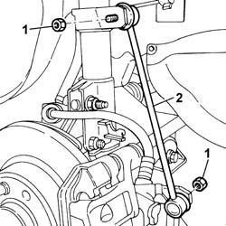

4410c11 front suspension anti-roll bar end anchorage link (one), lh or rh - r r
- Path
- Procedures > 44 SUSPENSION AND WHEELS > 4410 FRONT SUSPENSION > 4410C stabilizer bar and anchorage struts > 4410c11 front suspension anti-roll bar end anchorage link (one), lh or rh - r r
- Kind
- repair procedure (removal / refitting; the operation number is the code)
- Applies to
- all engines; all production periods
- Interactive page
- https://sloeber94.github.io/elrnDB-fPnd/en/#/2752803
Applies to: all engines; all production periods
 Removing
Removing
 Refitting
RefittingPosition the vehicle on a lift and raise it.
4450B02 left front wheel r r .
Or:
4450B04 right front wheel r r .
1. Undo the nuts securing the anchorage rod.
2. Remove the anchorage rod at the end of the anti-roll bar.

Applies to: all engines; all production periods
Refitting
RemovingFit the anti-roll bar anchorage rod.
Tighten the anchorage rod fixing nuts to torque.
 | Fastening | Component | Ø | Value (daNm) |
|---|---|---|---|---|
- | Bolt | FRONT ANTI-ROLL BAR. ANCHORAGE ROD. | M8 | 2.3 |
4450B02 left front wheel r r .
Or:
4450B04 right front wheel r r .
Lower the left and remove the vehicle.